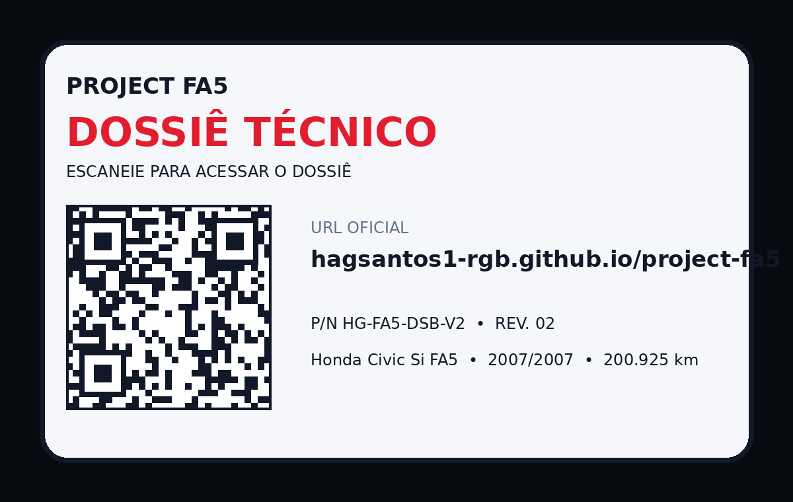

FA5
PROJECT FA5Honda Civic Si FA5 • 2007/2007
HONDA CIVIC SI FA5
Dossiê
Dossiê
Técnico
Registro digital oficial do Project FA5. Histórico técnico iniciado em 08/07/2026 com 200.925 km.
Operacional
- Quilometragem
- 200.925 km
- Ano/modelo
- 2007/2007
- Combustível
- Etanol E100
- Pneus
- Itaro 235/35R18
Indicadores
Saúde do veículo
95
MotorOperacional98
CombustívelOperacional--
FreiosNão documentado--
SuspensãoNão documentado90
ElétricaFT600 documentadaFicha do veículo
Identificação e configuração atual
Identificação
- VeículoHonda Civic Si FA5
- Ano/modelo2007/2007
- CorVermelho
- Quilometragem200.925 km
- AquisiçãoFevereiro/2025
- Histórico iniciado08/07/2026
Configuração atual
- MotorK20Z3 OEM interno
- ECUFuelTech FT600
- CombustívelEtanol E100
- AdmissãoITBs
- CombustívelCatch tank, bombas e bicos maiores, linhas novas
- Rodas/PneusOZ 18” • Itaro 235/35R18
Livro de Serviços
Registros documentados
001
08/07/2026 • 200.925 km
Concluído
Registro Inicial do Veículo
Criação do dossiê técnico e documentação da configuração atual. Histórico anterior do proprietário antigo não disponível.
Próximos registros
Trocas de óleo, velas, fluidos, freios e demais serviços serão adicionados conforme forem realizados.
Evolução
Linha do tempo
Aquisição do veículo
Data exata não documentada.
Início do dossiê técnico
Registro criado com 200.925 km.
Configuração atual documentada
FuelTech FT600, etanol E100, ITBs, sistema de combustível, escape, rodas e pneus.
Arquivo
Documentos e anexos
Acesso
Cartão QR
PROJECT FA5Dossiê Técnico

Escaneie para acessar o dossiê técnico publicado no GitHub Pages.
URL oficial
https://hagsantos1-rgb.github.io/project-fa5/
Esta URL deve ser usada para o QR definitivo do carro.